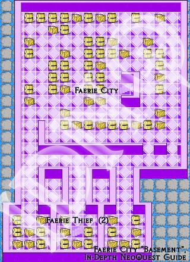

NeoQuest II Maps
Helping you find your way around NeoQuest II...
Meridell | Terror Mountain | Lost Desert | Haunted Woods | Faerieland
| Faerie City, Basement  To get to the Faerie Thief the second time, go through this basement. | |
|

Available maps for this act:
- Faerieland, Map 1: Start of, and head for the northern watchtower.
- Northern Watchtower, Level 1: Neat place. Rest and buy armor/weapons here, potions are upstairs, along with a bit of storyline.
- Northern Watchtower, Level 2: Storyline, potions... what else does one want?
- Faerieland, Map 2: From the Northern Watchtower to the Bridge of Mist...
- The Underclouds: This was a relatively fun level to map -- enjoy the walk!
- Cumulonimbus: Cumulonimbus is a faerie city... destroyed... and those stone clouds are always in your way. It's mostly dead-ends
- Village of Cirrus: The real town in the Underclouds.
- Faerieland (road to City): You even need a map here?
- Faerie City: Here's the order: Go up the Inn stairs first, fight the thief there. Then, go throught he "Basement" to fight the thief again, and finally meet her at the gates to faerie palace to fight her for the last time
- Faerie City, Inn (Level 1): Fight Faerie Thief for the first time here.
- Faerie City, Basement: To get to the Faerie Thief the second time, go through this basement.
- Faerie Palace, Level 1: Not that straightforward: it's HUGE!
- Faerie Palace, Level 2: First the do the L3 NE and L3 NW, and then, after getting the key pieced together, head to L3 SE to fight Terask.
- Faerie Palace, Level 3: (The Four Towers)
- Faerie Palace, Level 4: (The Four Towers)
- Faerie Palace, Level 5: Where's Terask II? You'll find out.